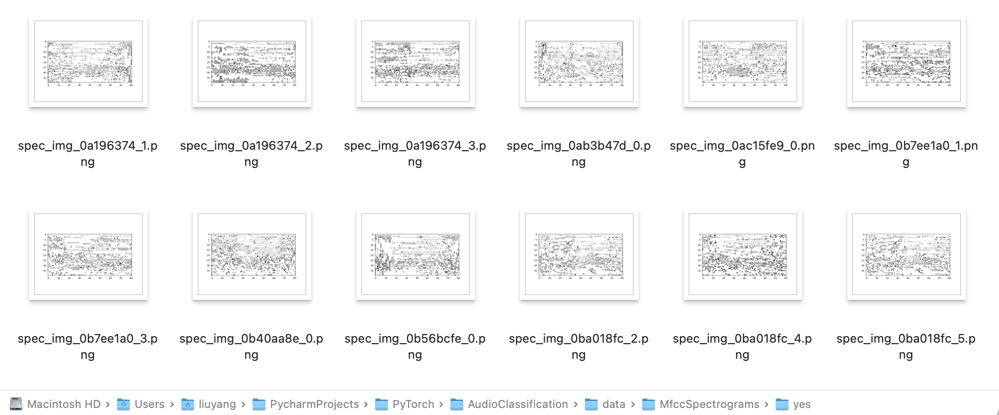

AudioClassification
Introduction
The steps all voice assistants likely use:
First, the assistant must convert the speech to text.
The text is run through a natural language processing (NLP) step, which turns the words into numeric data.
Finally, there's a classification of the utterance - what people say to the intent - what they want the voice assistant to do.
We will be building a simple model that can understand
yesandno. The dataset we will be using is the open dataset Speech Commands which is built into PyTorch datasets. This dataset has 36 total different words/sounds to be used for classification. Each utterance is stored as a one-second (or less) WAVE format file. We will only be usingyesandnofor binary classification
Audio Data
Just like with images we need to take our physical world and convert it to numbers or a digital representation for a computer to understand.
For audio, a microphone is used to capture the sound and then its converted from analog sound to digital sound by sampling at consistent intervals of time. This is called the
sample rate.The higher thesample ratethe higher the quality of the sound however after a certain point the difference is not able to be detected by the human ear. The average sound sample rate is 48 kHz or 48,000 samples per second. This dataset was sampled at 16kHz so our sample rate is 16,000.When the audio is sampled its sampling the
frequencyor the pitch of the sound and theamplitudeor how loud the audio is. We can then take our sample rate and frequency and represent the signal visually. This signal can be represented as awaveformwhich is thesignalrepresentation over time in a graphical format. The audio can be recorded in differentchannels. For example stereo recording have 2 channels, right and left.how we might want to parse out a file? if you have longer audio files you may want to split it out into
framesor sections of the audio to be classified individually. For this dataset we don't need to set any frames of our audio samples as each sample is only one second and one word. Another processing step might be anoffsetwhich means the number of frames from the start of the file to begin data loading.
Get setup with TorchAudio
TorchAudio is a library that is part of the PyTorch ecosystem that has I/O functionality, popular open datasets and common audio transformations that we will need to build our model. We will use this library to work with our audio data.
Download Data
1 | folder = 'data' |
Show Classes of dataset
1 | def visualize_classes(): |
Convert the sound to tensor
Wave file is one format in which we save our digital representation of our analog audio to be shared and played
使用的语音命令数据集被存储在波形文件中，这些文件都是一秒钟或更短。使用torchaudio.load加载文件，它将一个音频文件加载到一个Torch.Tensor对象中。TorchAudio已经为不同的音频后端抽象了加载函数，
1 | waveform, sample_rate = torchaudio.load(filepath=filename) |
plot waveform
1 | import matplotlip.pyplot as plt |

Data visualization and transformation
orchAudio has many transforms available in the library. take a deeper look at understanding the following concepts and transforms: Spectrogram, MelSpectrogram, Waveform, and MFCC. Once we understand these concepts we will create our spectrogram images of the yes/no dataset to be used in the computer vision model.
the list of supported transformations
- Resample: Resample waveform to a different sample rate.
- Spectrogram: Create a spectrogram from a waveform.
- GriffinLim: Compute waveform from a linear scale magnitude spectrogram using the Griffin-Lim transformation.
- ComputeDeltas: Compute delta coefficients of a tensor, usually a spectrogram.
- ComplexNorm: Compute the norm of a complex tensor.
- MelScale: This turns a normal STFT into a Mel-frequency STFT, using a conversion matrix.
- AmplitudeToDB: This turns a spectrogram from the power/amplitude scale to the decibel scale.
- MFCC: Create the Mel-frequency cepstrum coefficients from a waveform.
- MelSpectrogram: Create MEL Spectrograms from a waveform using the STFT function in PyTorch.
- MuLawEncoding: Encode waveform based on mu-law companding.
- MuLawDecoding: Decode mu-law encoded waveform.
- TimeStretch: Stretch a spectrogram in time without modifying pitch for a given rate.
- FrequencyMasking: Apply masking to a spectrogram in the frequency domain.
- TimeMasking: Apply masking to a spectrogram in the time domain.
Load the Dataset folders into a DataLoader
1 | from pathlib import Path |
load the dataset into a DataLoader
1 | from torch.utils.data import Dataset, DataLoader |
Transform and visualize
分解一些音频转换和可视化，以更好地理解它们是什么，以及它们告诉我们关于数据的内容。
waveform
波形是由采样率和频率产生的，并以视觉方式表示信号。这个信号可以用波形来表示，它是以图形格式表示的随时间变化的信号。音频可以被记录在不同的通道中。例如，立体声录音有两个通道，右和左。
必须使用 resample变换来减少波形的大小，然后用图形来显示新的波形形状。
绘制重采样后的波形对比图
1 | def plot_waveform(waveform, sample_rate, new_sample_rate, label): |

Spectrogram
频谱图将音频文件的频率映射到时间上，并允许我们按频率将音频数据可视化。这张图就是我们对音频文件进行计算机视觉分类时要用到的东西。
1 | def plot_spectrogram(waveform): |
Mel Spectrogram
Mel频谱图也是关于时间的频率，但是频率被转换为Mel Scale。Mel Scale 取频率，并根据音阶或旋律的声音感知而改变。这将内部的频率转换为Mel Scale，然后创建频谱图图像。
1 | def show_melspectrogram(waveform,sample_rate): |
Mel-frequency cepstral coefficients (MFCC)
对MFCC所做的简化解释是，它采取频率，应用变换，其结果是由频率产生的频谱的振幅。
1 | def show_mfcc(waveform,sample_rate): |
Create an image from a Spectrogram
我们已经分解了一些理解音频数据的方法，以及我们可以在数据上使用的不同 trandformations。现在让我们创建用于分类的图像。下面是两个不同的函数，用于创建用于分类的频谱图或MFCC图像。在这个例子中，我们将使用频谱图图像，但是，请随意使用下面的MFCC图像功能，玩玩MFCC分类。
1 | def create_images(training_dataloader, label_dir): |

Build Speech Model
Now that we have created the spectrogram images its time to build the computer vision model. We will be using the torchvision package to build our vision model.
Load Spectrogram images into a DataLoader for training
1 | import torch |
Create NN
Using CNN to classify the audio
1 | class CNN(nn.Module): |
Create Train and Test functions
1 | def train(net, training_dataloader, valid_dataloader, print_step = 100, optimizer=None, loss_fn=nn.CrossEntropyLoss()): |
Plot the average accuracy and Loss
1 | def plot_acc_loss(hist): |
Train and Validation
1 | if __name__ == "__main__": |